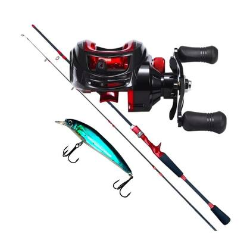
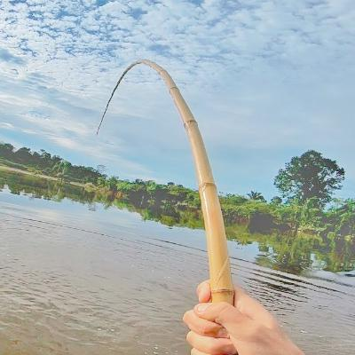

Onde Pescar ?
O local da pescaria interfere diretamente a "tralha" de pesca que o individuo precisa comprar, uma vara de bambu por exemplo não é indicada para pescaria esportiva em pesqueiros, mas sim em tanques de pesque e pague onde possui pequenos peixes.
Lugares para Pescar
- Pesqueiros / Pescarias esportivas
- Grandes Rios
- Lagoas
- Tanques de Pesque e Pague
Equipamentos de Pesca para Pescarias Esportivas e Grandes Rios
É Recomendando que se use varas maiores para arremessos longos, juntamente com molinetes ou carretilhas, seguindo nessa linha, uma isca artificial pode facilitar a captura dos peixes que vivem nesses ambientes, mas também é possivel usar iscas naturais
Equipamentos Recomendados
- Vara de 1,80 a 2,10 metros
- Molinetes ou Carretilhas
- Isco Artificial ou Natural

Comprar Kit de PescaEquipamentos para Lagos e Tanques de Pesque e Pague
Para este tipo de pescaria é recomendado que use varas menores e mais leves, como uma vara de bambu por exemplo, já que pequenos peixes como tilápias e carpas são encontrados nesses locais, e não nescessetam de grandres tralas de pesca para captura-los, um bom anzol com uma boa isca natural é o suficiente para pesca-los.
Equipamentos Recomendados
- Vara de Bambu
- Pequenos Anzóis
- Boias
- Iscas Naturais

Comprar Kit de Pesca